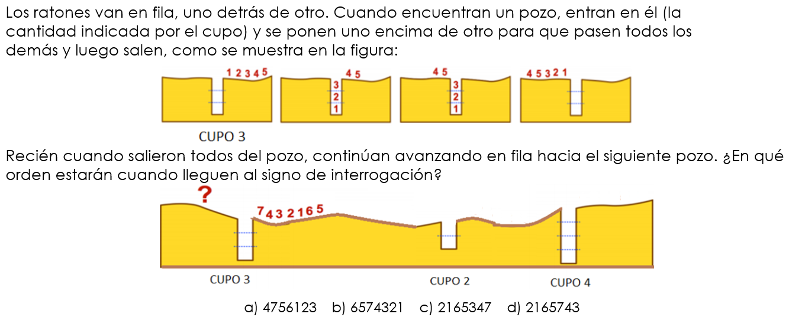

Programación 1
Lic. Rodrigo Albano


Licenciado en Sistemas - Universidad ORT
CGO - GlobalUY


Evaluaciones
| Instancia | Mínimo | Máximo |
|---|---|---|
| Parcial 1 | 0 | 15 |
| Parcial 2 | 20 | 40 |
| Obligatorio 1 | 0 | 10 |
| Obligatorio 2 | 18 | 35 |
Para aprobar se deben obtener 70 o más puntos y superar los mínimos requeridos. Para exonerar se deben obtener 86 o más puntos y superar los mínimos requeridos.
Desarrollo del Curso
Objetivos del Curso
- Desarrollar el pensamiento computacional (PC): abstracción, resolución de problemas, reconocimiento de patrones y algoritmia.
- Desarrollar las habilidades básicas de programación utilizando un lenguaje de amplio uso.
Implica:
- Conocer, entender y aplicar los conceptos básicos de programación
- Poder diseñar e implementar soluciones de problemas no triviales en un lenguaje de programación
Relación Teórico - Práctico
- El práctico está desfasado del teórico para que primero se puedan ver los conceptos y luego en práctico ser aplicados
Práctico - Pensamiento Computacional

Práctico - Pensamiento Computacional

Práctico - Pensamiento Computacional

Práctico - Pensamiento Computacional

Práctico - Pensamiento Computacional

Práctico - Pensamiento Computacional
Práctico - Pensamiento Computacional

Práctico - Pensamiento Computacional

Práctico - Pensamiento Computacional
Práctico - Pensamiento Computacional

Práctico - Pensamiento Computacional
Práctico - Pensamiento Computacional

Práctico - Pensamiento Computacional
Práctico - Pensamiento Computacional
Práctico - Pensamiento Computacional

Práctico - Pensamiento Computacional

Práctico - Pensamiento Computacional
Práctico - Pensamiento Computacional
Práctico - Pensamiento Computacional

Práctico - Pensamiento Computacional

Práctico - Pensamiento Computacional

Práctico - Pensamiento Computacional
Práctico - Pensamiento Computacional
Práctico - Pensamiento Computacional
Práctico - Pensamiento Computacional
Práctico - Pensamiento Computacional

Práctico - Pensamiento Computacional

Práctico - Pensamiento Computacional
Práctico - Pensamiento Computacional

Práctico - Pensamiento Computacional
Práctico - Pensamiento Computacional

Práctico - Pensamiento Computacional

Práctico - Pensamiento Computacional

Ejercicios Adicionales

Ejercicios Adicionales
Ejercicios Adicionales
Ejercicios Adicionales

Ejercicios Adicionales

Ejercicios Adicionales

Práctico 3
Pseudocódigo
Codificar
Pedir la base y altura de un triángulo. Mostrar su área
Algoritmo Ejercicio
Mostrar "Calculemos el area de un triangulo =)"
Mostrar "Ingrese la Base"
Leer base
Mostrar "Ingrese la Altura"
Leer altura
area = (base * altura) / 2
Mostrar "La altura del triangulo es: " + ConvertirATexto(area)
FinAlgoritmo
Codificar
Ingresar 3 valores enteros y mostrar el mayor de ellos. Ej: si se lee 1, -3, 5, mostrar: 5
Algoritmo Ejercicio
Mostrar "Ingresar Valor"
leer a
Mostrar "Ingresar Valor"
leer b
Mostrar "Ingresar Valor"
leer c
mayor = a
si(a>b)
mayor = a
SiNo
mayor = b
FinSi
si(c>mayor)
mayor = c
FinSi
mostrar "El mayor numero ingresado es: " + mayor
FinAlgoritmo
Codificar
Recibir valores y sumarlos tomando en cuenta las siguientes convenciones praticulares:
- Si se recibe un 0 se termina la suma y se muestra el total
- Si se recibe un 2 se suma y luego se duplica el total acumulado
- Si se recibe un número negativo se ignora
Algoritmo Ejercicio
suma = 0
dato = 99
Mientras dato <> 0 Hacer
Mostrar "Ingrese valor"
Leer dato
Si( dato > 0)
// El valor ingresado es positivo. Procedemos con la lógica
suma = dato + suma
Si(dato = 2)
suma = suma * 2
FinSi
FinSi
Fin Mientras
Mostrar "La sumatoria es de: " + ConvertirATexto(suma)
FinAlgoritmo
Codificar
Leer 5 valores y mostrar los siguientes resultados:
- La suma de los 2 primeros, la multiplicación del 3º y 4º; el promedio de los 5 y
- la suma de todos los resultados anteriores
Algoritmo Ejercicio
Mostrar "Ingrese valor 1"
Leer primero
Mostrar "Ingrese valor 2"
Leer segundo
Mostrar "Ingrese valor 3"
Leer tercero
Mostrar "Ingrese valor 4"
Leer cuarto
Mostrar "Ingrese valor 5"
Leer quinto
Mostrar "Suma de los 2 primeros es: " + ConvertirATexto((primero + segundo))
Mostrar "Multiplicación de 3º y 4º: " + ConvertirATexto((tercero * cuarto))
promedio = (primero + segundo + tercero + cuarto + quinto) / 5
Mostrar "Promedio: " + ConvertirATexto( promedio )
Mostrar "Sumatoria de los resultados anteriores es: " + ConvertirATexto(((primero + segundo) + (tercero * cuarto) + promedio))
FinAlgoritmo
Codificar
Recibir 6 valores y mostrar su suma en valor absoluto. Ej. si se lee -1, 2,-3, 4,-5,6, mostrar 21
Codificar
Pedir el ingreso de un número n. Mostrar la suma de todos los impares entre 1 y n.
Codificar
Pedir el ingreso de un número y mostrar sus dígitos en forma separada.
Asumir que el número ingresado es positivo
Codificar
Pedir el ingreso de 10 números. Mostrar el promedio de los que sean menores de 70 y mayores de 50.
Codificar
Dada una serie de números (terminada por el ingreso del número 0) indicar los dos números mayores de la misma.
Se asume que hay dos o más datos y no son negativos.
Codificar
Pedir el ingreso de un número n.
Luego pedir el ingreso de n números, e imprimir el mayor de ellos y la suma de todos los números desde el principio hasta ese máximo inclusive.
Ej: n = 7 Serie: 22 3 5 4 24 17 19 Mayor 24, Suma 58
Codificar
Ingresar la hora y minutos de entrada de un funcionario a la empresa, también la hora y minutos de salida.
Indicar la cantidad de horas y minutos que trabajó.
Se asume que el funcionario entra y sale durante el mismo día.
Codificar
En una maratón se controlan los tiempos que demoran cada uno de los corredores (en minutos).
Se desea saber cuál fue el peor y mejor tiempo realizado.
Al iniciar se indica la cantidad de corredores.
Se asume que la maratón dura como máximo 5 horas y que participan 3 o más corredores.
Ejercicio Adicional
Leer n y mostrar los primeros números de la serie de Perrin hasta dicho n. Se definen:
- P(0) = 3
- P(1) = 0
- P(2) = 2
- P(n) = P(n − 2) + P(n − 3) si n > 2.
Ejemplo: si se ingresa n=6, se muestra:
- 3 0 2 3 2 5 5
- 3 0 2 3 2 5 5 7 10 12 17
Posible Solución
Proceso sin_titulo
mostrar "ingrese n"
leer n
p0=3
p1=0
p2 =2
si (n=0)
mostrar p0
FinSi
si (n=1)
mostrar p0
mostrar p1
FinSi
si (n>=2)
mostrar p0
mostrar p1
mostrar p2
FinSi
para i =3 hasta n con paso 1 Hacer
nuevo = p0 + p1
p0=p1
p1 = p2
p2 = nuevo
mostrar nuevo
FinPara
FinProceso
Ejercicio Adivina el Número
El sistema genera un número al azar entre 0 y 9999 y solicita valores al usuario. El usuario ingresa el número y el sistema debe indicar si acertó o no. Cuando acierta termina el juegoVersión 2
Cuando acierta el número, indicar cuántos números fueron ingresados.Versión 3
Luego de cada ingreso de un número por parte parte del usuario, si no acertó, el sistema le da una sugerencia sobre ese número: “es muy grande” o “es muy chico”. Por ejemplo, si el sistema generó el número 1234 y el usuario ingresó 1500, el sistema debe decir “es muy grande”.Ejercicio Adivina el Número
Versión 4
Luego de mostrada la sugerencia, se le debe preguntar al usuario si desea rendirse, solicitar la pista o continuar ingresando. Si decide rendirse, se le debe mostrar por pantalla cual era el número que debía adivinar, y la cantidad de intentos que realizó. Si el usuario solicita la pista, el sistema debe mostrarle con que cifra termina el número que debe adivinar (investigar módulo 10).Versión 5
La pista se puede solicitar una única vez. Luego de utilizada, informar que ya se usó.Versión 6
Se comienza la partida con 100 puntos. El juego termina cuando el usuario adivina el número o cuando su cantidad de puntos llega a 0. Por cada intento se le resta un punto, y si decide solicitar la pista, se le restan 50 puntos.Posible Solución - Adivina el Número
Algoritmo AdivinaElNumero
numeroAdivinar = Azar(1000)+1
acerto = falso
usoPista = falso
rendirse = falso
puntaje = 100
intentos = 0
Mostrar "Bienvenidos al juego Adivina el Número"
Repetir
Mostrar "Ingresar un número: "
Leer dato
intentos = intentos + 1
Si dato == numeroAdivinar
acerto = verdadero
SiNo
// Comenzamos con la lógica
Si dato > numeroAdivinar
Mostrar "El número que se ingresó es muy grande"
SiNo
Mostrar "El número que se ingresó es muy chico"
FinSi
opc = 0
Mostrar "Opciones"
Mostrar "1. Rendirse"
Mostrar "2. Reintentar"
puntaje = puntaje - 1
Si No(usoPista)
Mostrar "3. Usar pista"
FinSi
Repetir
Mostrar "Ingrese opción: "
Leer opc
Hasta Que opc == 1 o opc == 2 o (opc == 3 y No(UsoPista))
Si opc == 1
rendirse = verdadero
SiNo
Si opc == 3 y No(UsoPista)
UsoPista = verdadero
Mostrar "La última cifra del número es: " + ConvertirATexto(numeroAdivinar mod 10)
puntaje = puntaje - 50
FinSi
FinSi
FinSi
Hasta Que acerto o puntaje <= 0 o rendirse
Si acerto
Mostrar "Acertaste :) El número es " , numeroAdivinar , " y el puntaje es ",puntaje
FinSi
Si rendirse
Mostrar "Rendición :( El número era " , numeroAdivinar
FinSi
Si No(acerto) y puntaje <= 0
Mostrar "Perdió :( El número era " , numeroAdivinar
FinSi
Mostrar "Se realizaron ", intentos " intentos "
FinAlgoritmo
Práctico 4 - Consola
Números & Booleanos
100 + 4*11;
x = 3;
y = 4;
z = 2;
f = false;
(x>z) && (y>z)
(x + y / 2) <= 3.5
! f
! f || (( x= 3*y))
f && (x > z + y)
10 > 9
x === 5
x !== 5
x >= 8
x <= 8
(x < 10 && y > 1)
f === true && true
false || (3===4)
1/0
-3/0
0/0
3.15
Number.MAXVALUE;
Number.MAX_VALUE;
Number.MIN_VALUE;
Math.PI;
Strings
"hola"
"hola" + " que tal"
"hola".length
"hola".toUpperCase()
"hola".charAt(2)
Para convertir de textos a números:
parseInt("124")
Investigar:
"13"+7
typeof("137")
typeof(137)
Práctico 5 - Snippets
Chrome => DevTools (F12) => Source => Snippets Chrome => DevTools (F12) => Control+Shift+P => "Show Snippets"
Codificar en Snippet
Pedir la base y altura de un triángulo. Mostrar su área.
Ej. si se lee 6 y 2, muestra 6.
console.log('Calculemos el area de un triangulo =)');
var base = parseInt(prompt("Por favor, ingrese la base"));
var altura = parseInt(prompt("Por favor, ingrese la altura"));
var area = ((base * altura) / 2)
console.log('El area del triangulo es: ' + area);
alert("El area del triangulo es: " + area);
Codificar en Snippet
Ingresar 3 valores enteros y mostrar el menor de ellos.
Ej. si se lee: 1, -3, 5, mostrar: -3
alert('Calculemos el menor de 3 numeros enteros');
var val1 = parseInt(prompt("Por favor, ingrese el primero"));
var val2 = parseInt(prompt("Por favor, ingrese el segundo"));
var val3 = parseInt(prompt("Por favor, ingrese el tercero"));
var menor = val1;
if(val2 < val1){
menor = val2;
}
if(val3 < menor){
menor = val3;
}
alert('El menor es: ' + menor);
Codificar en Snippet
Ingresar 3 datos y mostrar la suma de sus valores absolutos.
Ej. si se lee -1, 5, -30 => mostrar: 36
alert("Ingresar 3 datos y mostrar la suma de sus valores absolutos");
var val1 = parseInt(prompt("Por favor, ingrese el primero"));
var val2 = parseInt(prompt("Por favor, ingrese el segundo"));
var val3 = parseInt(prompt("Por favor, ingrese el tercero"));
var suma = Math.abs(val1) + Math.abs(val2) + Math.abs(val3);
alert("La sumatoria de los valores absolutos es: " + suma);
Codificar en Snippet
Pedir el ingreso de un número n. Mostrar la suma de todos los impares que sean múltiplos de 3 entre 1 y n.
Ej. si se ingresa 16 => muestra 27
alert("Calculemos la suma de los impares y multiplos de 3, comprendidos entre 1 a 'n'");
var dato = parseInt(prompt("Por favor, ingrese 'n'"));
var suma = 0;
// Iteramos
for(i = 1; i <= dato; i++){
// Verificamos si es IMPAR y Multiplo de 3
if( !(i % 2) == 0 && (i % 3) == 0 ){
suma = suma + i;
}
}
alert("La sumatoria es de: " + suma);
Codificar en Snippet
Ingresar 10 números. Mostrar el promedio.
Codificar en Snippet
Ingresar 10 números. Se asumen positivos. Indicar la diferencia entre el mayor y el menor
Codificar en Snippet
Se ingresa una cantidad de segundos (menor a un millón) y debe mostrarse a cuántos días, horas, minutos y segundos corresponde.
let segundos = parseInt(prompt("Ingrese la cantidad de segundos: "));
if(segundos < 1000000) {
let dias = (((segundos / 60) / 60) / 24);
if (dias >= 1) {
segundos -= Math.trunc(dias) * 86400;
}
let horas = ((segundos / 60) / 60);
if (horas >= 1) {
segundos -= Math.trunc(horas) * 3600;
}
let minutos = segundos / 60;
if (minutos >= 1) {
segundos -= Math.trunc(minutos) * 60;
}
console.log("Dias: " + Math.trunc(dias));
console.log("Horas: " + Math.trunc(horas));
console.log("Minutos: " + Math.trunc(minutos));
console.log("Segundos: " + Math.trunc(segundos));
}
else {
alert("Ingrese un numero menor a 1.000.000");
}
Codificar en Snippet
Se ingresan los datos de dos personas que se sabe nacieron el mismo año. De cada una se indica nombre, dia y mes.
Debe informarse quién de ellos es el mayor, o la indicación de que ambos nacieron en la misma fecha.
Codificar en Snippet
Se ingresan 3 números y debe retornarse un texto con el signo del resultado del producto de los mismos
Ej: 1, -4, 7 muestra "el signo es -"
Codificar en Snippet
Escribir un programa que reciba un número de 3 dígitos e indique si es un número de Armstrong
Nota: un número de Armstrong es aquel en el cual la suma de cada uno de sus dígitos elevado al número total de dígitos es igual al a sí mismo.
Ej: Si evaluamos 153 ==> 13 + 53 + 33 = 153
Ej: Si evaluamos 371 ==> 33 + 73 + 13 = 371
alert("Verifiquemos si es un numero de Armstrong");
var dato = parseInt(prompt("Por favor, ingrese un número de 3 dígitos"));
var suma = 0;
var datoPartido = dato.toString().split('');
var cantDigitos = datoPartido.length;
for(i = 0; i < cantDigitos; i++ ){
suma = suma + (Math.pow( datoPartido[i] , cantDigitos ));
}
var mensaje = "NO es un numero Armstrong";
if( dato === suma ){
mensaje = "ES un numero Armstrong";
}
alert("Valor Sumatoria: " + suma + " | " + mensaje);
Ejercicio Adicional
Realizar una página con un script que calcule el valor de la letra de un número de DNI (Documento nacional de indentidad).
El algoritmo para calcular la letra del dni es el siguiente:
- El número debe ser entre 0 y 99999999
- Debemos calcular el resto de la división entera entre el número y el número 23.
- Según el resultado, de 0 a 22, le corresponderá una letra de las siguientes: (T, R, W, A, G, M, Y, F, P, D, X, B, N, J, Z, S, Q, V, H, L, C, K, E)
- Si lo introducido no es un número deberá indicarse con un alert y volver a preguntar.
- Deberá de repetirse el proceso hasta que el usuario ingrese "CANCELAR"
//DECLARAMOS LAS VARIABLES QUE VAMOS A USAR
var resto = 0;
var letra = "";
do {
var numero = prompt("Introduce tu dni");
if (Number(numero) == numero) {
numero = Number(numero);
if (numero >= 0 && numero <= 99999999) {
//CALCULAMOS EL RESTO DE DIVIDIR EL NÚMERO ENTRE 23
resto = numero % 23;
//SEGÚN SEA EL RESTO ASIGNAMOS UN VALOR A LA VARIABLE LETRA
switch (resto) {
case 0:
letra = "T";
break;
case 1:
letra = "R";
break;
case 2:
letra = "W";
break;
case 3:
letra = "A";
break;
case 4:
letra = "G";
break;
case 5:
letra = "M";
break;
case 6:
letra = "Y";
break;
case 7:
letra = "F";
break;
case 8:
letra = "P";
break;
case 9:
letra = "D";
break;
case 10:
letra = "X";
break;
case 11:
letra = "B";
break;
case 12:
letra = "N";
break;
case 13:
letra = "J";
break;
case 14:
letra = "Z";
break;
case 15:
letra = "S";
break;
case 16:
letra = "Q";
break;
case 17:
letra = "V";
break;
case 18:
letra = "H";
break;
case 19:
letra = "L";
break;
case 20:
letra = "C";
break;
case 21:
letra = "K";
break;
case 22:
letra = "E";
break;
default:
//SI NO ES UN NÚMERO ENTRE 0 Y 22 MOSTRAMOS UN ERROR
alert("Numero erroneo");
}
}
//MOSTRAMOS MENSAJE CON EL DNI Y LA LETRA OBTENIDA
alert("Numero: " + numero + ", Letra: " + letra);
}
//SI NO ES UN NÚMERO
else {
//SI SE PULSÓ ACEPTAR SIN PONER UN NÚMERO
if (numero != undefined) {
alert(numero + " No es un numero");
}
}
}
//MIENTRAS NO SE PULSE CANCELAR VUELVE ARRIBA
while (numero != undefined);
Práctico 6 - Funciones y Strings (básico)
¿Que es una función?
Un conjunto de instrucciones que realiza una tarea o calcula un valor

Implementar una función que convierta la edad de un perro en “años humanos”, multiplicándose por 7.
Implementar la función Buzz, que recibe un número natural n y retorna la palabra "buzz", si el número es múltiplo de 3 o de 5; en otro caso retorna el mismo número.
Implementar la función convertirACelsius(grados), que recibe una cantidad de grados en Fahrenheit y los convierte a Celsius.
Nota: fórmula: ((grados-32)*5/9 )
Implementar la siguiente función en JS: function invertir(palabra).
Recibe una palabra y la retorna invertida. Ej: recibe: “hola mundo”, retorna : “odnum aloh”
function invertir(palabra){
let nueva="";
for (let i = palabra.length -1; i >=0; i--){
nueva = nueva + palabra[i];
}
return nueva;
}
Implementar la siguiente función en JS: function vecesLetra(frase, letra)
Recibe una frase y una letra, retorna cuántas veces aparece esa letra en la frase recibida. Ejemplo: recibe: “hoy es viernes” y “a”, retorna 0.
function vecesLetra(frase, letra){
let veces=0;
let fraseM = frase.toUpperCase();
let letraM = letra.toUpperCase();
for (let i = 0; i < fraseM.length; i++){
if ( fraseM[i] === letraM ){
veces++;
}
}
return veces;
}
alert(vecesLetra("casa","a"));
Implementar la siguiente función en JS: function cantidadPalabras(frase)
Recibe una frase, retorna la cantidad de palabras que contiene. Una palabra se considera separada de otra por un espacio en blanco exclusivamente.
function palabras(frase){
return frase.split(" ").length;
}
Implementar la siguiente función en JS: function empiezaYTermina(texto)
Recibe un texto y retorna si empieza y termina con la misma letra.
function empiezaTermina(frase){
let fraseM = frase.toUpperCase();
return fraseM.charAt(0)==fraseM.charAt(fraseM.length-1);
}
Implementar la siguiente función en JS: function esPalindromo(frase)
Recibe una frase (se asume sin espacios en blanco) y retorna true si es palíndroma, esto es que se lee igual de izquierda a derecha y de derecha a izquierda. Ejemplo: ANILINA.
function palindroma(frase){
let fraseM = frase.toUpperCase();
return fraseM === invertir(fraseM); //función realizada en ejercicio 5
}
Ejercicio Adicional
Indicar si un string es balanceado, para ello para toda A hay una Z mas adelante.
Ej. AACZD es balanceado, AZA no lo es. Una misma Z puede balancear varias A
Práctico 7 - Funciones y Strings (avanzados)
Hacer una función que recibe n y retorna la suma de todos los números entre 1 y n.
Hacer una función que muestre las tablas de multiplicar del 1 al 10.
Implementar una función que dados dos parámetros numéricos, retorne verdadero si alguno de los números es 50 o si la suma de ellos lo es..
Implementar una función que dado 3 parámetros numéricos, retorne verdadero si el último dígito de cada uno de los números ingresados son iguales.
Implementar la siguiente función en JS: function primerNoRepetido(frase)
Recibe una frase y retorna el primer carácter que no tiene repetidos. Ejemplo: recibe: “abacddbec” , retorna “e”. Si no hay ninguno, retorna “NINGUNO”.
Implementar la siguiente función en JS: function abreviar(frase)
Recibe una frase y la retorna abreviada (si es de largo mayor a 5). Ejemplo: recibe “Hoy es lunes”, retorna: “Hoy e…”
Implementar la siguiente función en JS: function ocultoMail(email)
Recibe un email válido y lo oculta, mantiene los primeros 5 caracteres y luego “...”. Si tiene menos de 5, lo deja igual.
Ejemplo: recibe “anamaria@gmail.com”, retorna “anama…@gmail.com”
Implementar la siguiente función en JS: function invertirCase(frase)
Recibe una frase y la retorna cambiando mayúsculas por minúsculas y viceversa. Ej: recibe “Hola”, retorna “hOLA”
Implementar la siguiente función en JS: function humanizar(numero)
Recibe un número y lo retorna en formato “humanizado”. Ej: recibe 1, retorna: 1ero recibe 2, retorna 2do. Recibe 3, retorna 3ero. Para todos los demás, retorna el número con o: 123, retorna 123o.Implementar la siguiente función en JS: function cambioLetras(palabra)
Recibe una palabra y retorna un string en el cual cada caracter del string original fue reemplazado por el siguiente caracter del alfabeto. Ej: “java” retornaría “kbwb”Práctico 8 - Arrays
Dado un array y un valor, implementar una función que retorne el número más cercano al valor dado.
El más cercano puede ser un valor superior o inferior. Si hubiera más de un posible resultado, retornar cualquiera de ellos.
Ejemplo: datos: 10 18 23 4 -5 50 , valor: 19, el más cercano es 18
function masCercano(datos, valor){
let min = Math.abs(datos[0]-valor);
let posMin = 0;
for (let i = 1; i < datos.length; i++){
let dif = Math.abs(datos[i]-valor);
if (dif < min){
min = dif;
posMin= i;
}
}
return datos[posMin];
}
Escribir un programa que muestre el día actual y la hora en el siguiente formato:
Día Actual: Domingo Hora: 10:45
Nota: investigar Date, getDay(), getHours(), getMinutes()
function armarFecha(){
let dias=["Domingo","Lunes","Martes","Miercoles","Jueves","Viernes","Sabado"];
let hoy = new Date();
let min = hoy.getMinutes();
if(min < 10){
min = '0' + min;
}
let ret = "Dia actual "+dias[hoy.getDay()]+" Hora "+hoy.getHours()
+":"+ min;
return ret;
}
Escribir un función que reciba un array cargado con números y retorne verdadero si dichos números ya están ordenados en forma estrictamente ascendente.
function estanCreciente(datos){
let estan = true;
let pos = 1;
while (pos < datos.length && estan){
if (datos[pos]<= datos[pos-1]){
estan = false;
}
pos++;
}
return estan;
}
Se tiene una caja fuerte rodeada de 100 sensores de alarma. Cada sensor puede estar prendido o no. Implementar una función que reciba el array con la información de los sensores y retorne la cantidad de sensores que cumplen que él y sus dos vecinos están prendidos.
Ejemplo con 10 sensores: [true, true, false, true, true, true, true, true, false, true], retorna 3
function alarmas(datos){
let cant = 0;
for (let i=0; i < datos.length-2; i++){
if (datos[i]&& datos[i+1]&&datos[i+2]){
cant++;
}
}
return cant;
}
Para poner moquette en una habitación rectangular se pueden combinar distintos recortes. Se tienen varios trozos rectangulares. De cada uno se sabe largo y ancho. Esa información está en un array.
Ej. 2 4 1 3 5 6 son 3 trozos (de 2*4, 1*3 y 5*6, totalizando 41 m2).
Implementar una función que reciba el array y el tamaño de la habitación y retorne si la cubre o no.
Se tiene información de un censo. Cada familia encuestada tiene entre 0 y 12 hijos. Implementar una función que recibe un array donde cada posición contiene la cantidad de hijos de una familia y retorne un array donde cada posición es la cantidad total de familias con 12, con 11, ... , con 0 hijos
Dado un array cargado con números, indicar cuál es el número que aparece más veces y su cantidad de ocurrencias. Si hubiera varios, cualquiera de ellos.
Ej: [1,5,1,5,7,8,1] retorna “el número 1 con 3 ocurrencias”Dado un array de ordenado de números, implementar una función que retorne un nuevo array sin los elementos que estén duplicados en el array original.
Ej: [1,1,56,67,67,101,156] retorna [1, 56, 67, 101, 156]Dado un array cargado con números y un valor, indicar en qué posiciones (índices) se encuentran dos elementos que sumados tienen como resultado el valor indicado. En caso de haber más de un par, mostrar cualquiera de ellos. En caso de que no exista ningún par posible indicarlo.
Ej: [23, 4, 56, 67, 8, 55] y valor: 64 mostrar “2 y 4”Práctico 10 - HTML y JS
Diseñar una página que permita ingresar 2 números y al presionar un botón muestre su suma y su producto en un párrafo.
Leer 2 números y muestra su suma y producto en un párrafo
La suma es 20 y el producto es 100
window.addEventListener('load', inicio);
function inicio(){
document.getElementById("boton").addEventListener("click", proceso);
}
function proceso(){
let num1 = parseInt(document.getElementById("numero1").value);
let num2 = parseInt(document.getElementById("numero2").value);
mostrarEnPantalla("La suma es " + (num1+num2)+ " y el producto es " + num1*num2);
}
function mostrarEnPantalla(textoMostrar){
document.getElementById("resultado").innerHTML = textoMostrar;
}
Diseñar una página que permita ingresar un número y al presionar un botón muestre en una lista cada número ingresado y la indicación de si es par o impar
Ejercicio 2
Lee un número y muestra en una lista el número y la indicación de si es par o no
window.addEventListener('load', inicio);
function inicio(){
document.getElementById("boton").addEventListener("click", proceso);
}
function proceso(){
let numero = parseInt(document.getElementById("dato").value);
agregarElementoEnLista(generar(numero));
}
function generar(valor){
let res = "El dato ingresado es " + valor;
if (valor %2===0){
res += " es par";
}
else {
res += " es impar";
}
return res;
}
function agregarElementoEnLista(texto){
let node = document.createElement("LI");
let textnode = document.createTextNode(texto);
node.appendChild(textnode);
document.getElementById("lista").appendChild(node);
}
Diseñar una página que permita ingresar una palabra y al presionar un botón muestre en una tabla la palabra original y la indicación de si es palíndroma o no
Con cada nueva consulta se agrega la información en la tabla
Ejercicio 3
Lee una palabra y muestra en una tabla si es palíndroma
window.addEventListener('load', inicio);
function inicio(){
document.getElementById("boton").addEventListener("click", proceso);
}
function proceso(){
let palabra = document.getElementById("palabra").value;
agregarFilaEnTabla(palabra, palindromo(palabra));
}
function agregarFilaEnTabla(pal,res){
let tablaPantalla = document.getElementById("tabla");
let fila = tablaPantalla.insertRow();
let celdaIzq = fila.insertCell();
celdaIzq.innerHTML= pal;
let celdaDer = fila.insertCell();
celdaDer.innerHTML= res;
}
function invertir(palabra){
let nueva="";
for (let i = palabra.length -1; i >=0; i--){
nueva = nueva + palabra[i];
}
return nueva;
}
function palindromo(palabra){
let res= "NO";
if( palabra===invertir(palabra)){
res="SI" ;
}
return res;
}
Diseñar una página que permita ingresar 2 números y según la selección de un radio button (+ - * /) realice la operación elegida.
Diseñar una página que permita ingresar números y los vaya mostrando en una tabla. Simultáneamente muestra el mayor de los ingresados y el promedio.
Diseñar una página que ingrese un nombre, y si no está repetido, lo muestra en una lista.
Diseñar una página para adivinar un número.
El programa genera un número al azar entre 1 y 100, el jugador ingresa el número y el programa indica si acertó, si es más grande o más chico.
Diseñar una página que contenga imágenes de una lámpara y un interruptor. Al presionar el interruptor, la lámpara debe prenderse.
Se cuenta con las imágenes necesarias de la lámpara y el interruptor para ambos escenarios (encendida y apagada).
Diseñar un formulario para ingresar usuario y contraseña. Disponer de un botón para enviar y limpiar el formulario.
Diseñar un formulario para ingresar información general de un usuario:nombre (hasta 12 caracteres), contraseña (máximo 8 caracteres), género (masculino o femenino), dirección, fecha de nacimiento, cantidad de hijos (de 1 a 10), forma de contacto preferida (combo con opciones), comentarios (área de texto) y correo (e-mail).
Al enviar el formulario indicar si los comentarios contienen la palabra “Bueno” o no.
Práctico 12 - Objetos y Clases
Dado el siguiente código, incorporar el código necesario para que se muestre los nombres de las propiedades (nombre, semestre, ingreso)
var estudiante = {
nombre : "Ana Perez",
semestre : "1",
ingreso : 2023
};
var estudiante = {
nombre : "Ana Perez",
semestre : "2",
ingreso : 2018 };
for(let propiedad in estudiante){
alert(propiedad);
}
Inicializar un objeto en forma literal para contener información de una receta de cocina para empanadas. Debe tener titulo (string), porciones (número) e ingredientes (array de string).
Utilizando console.log mostrar la información de la receta de una por línea:
- empanadas caseras
- porciones:2
- Ingredientes:
- harina
- agua
- carne
var receta = {
'titulo': 'Empanadas caseras',
'porciones': 2,
'ingredientes': ['harina', 'agua', 'carne']
};
console.log(receta.titulo);
console.log(receta.porciones);
for (var i = 0; i < receta.ingredientes.length; i++) {
console.log(receta.ingredientes[i]);
}
Crear un array de objetos, donde cada objeto corresponde a un auto. Cada auto tiene chapa (string), marca (string) y la indicación de si tiene paga la patente o no. Incluir 2 autos. Utilizar la forma literal.
Recorrer el array y por cada auto indicar marca, chapa y “al día” o “atrasado” según tenga paga la patente o no.
var autos = [
{
chapa: 'SBA 1234',
marca: 'FORD',
paga: false
},
{
chapa: 'DCD 2222',
marca: 'VW',
paga: true
}
];
for (var i = 0; i < autos.length; i++) {
var auto = autos[i];
var datos = auto.chapa + ' de la marca ' + auto.marca;
if (auto.paga) {
console.log(datos + ' al día');
} else {
console.log(datos + ' atrasado');
}
}
Dado el siguiente código, escribir la función totalCompra que retorna el monto total de la compra
var compra = {
banana: "80.25",
manzana: "13.99",
peras: "12.55",
duraznos: "23.60",
leche: "31.34",
yogur: "22.36"
};
alert(totalCompra(compra));
function totalCompra(carrito){
let suma = 0;
for (let valor in carrito) {
suma += Number.parseFloat(carrito[valor]);
}
return suma;
}
var p1= new Punto(10,20);
var p2= new Punto(40,50);
var p3= p1.sumar(p2);
console.log(p3);
class Punto {
constructor(x, y) {
this.x = x, this.y = y
}
sumar(otro) {
return new Punto(this.x + otro.x, this.y + otro.y)
}
}
Crear la clase CuentaBancaria, que tiene nombre y saldo. Tiene también un método depositar y de impresión.
Crear 3 cuentas para ejemplificar su uso, incluyendo depósitos.
class Cuenta{
constructor(nombre, saldo){
this.nombre=nombre;
this.saldo=saldo;
}
depositar(monto){
this.saldo+= monto;
}
toString(){
return "Cuenta de "+this.nombre+ " $ "+this.saldo;
}
}
let c11 = new Cuenta("Ana",1000);
let c21 = new Cuenta("Luis",500);
let c31 = new Cuenta("Pedro",800);
alert(c11);
alert(c21);
alert(c31);
c11.depositar(500);
alert(c11);
Gastos de la casa:
- Crear una página para ingresar gastos de una casa. De cada gasto se ingresa día (1-31), monto (mayor que 0) y descripción.
- Agregar un botón que permita mostrar todos los gastos ordenados por monto en una tabla. Para elegir si el orden es creciente o decreciente utilizar un radio button.
- Agregar un botón que permita consultar el gasto más caro.
- Agregar un botón que permita consultar el promedio de gastos. Mostrar 2 cifras decimales.
- Agregar un botón que informe en una lista el total de gastos por cada día
¡Hasta la Próxima Semana!